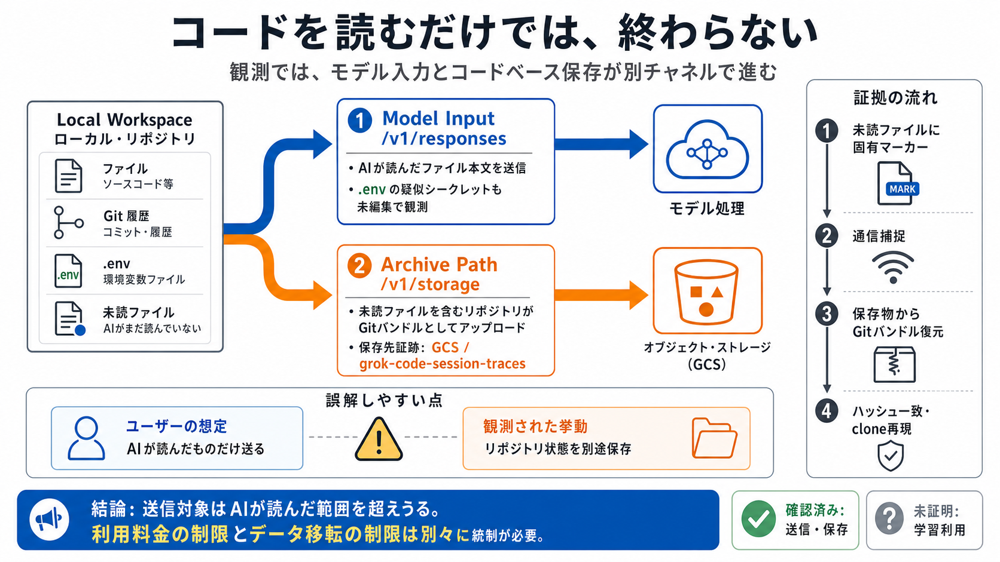

/v1/responses
読込ファイルの本文が送信され、.env内の疑似シークレットも未編集で確認された。

Grok Build CLI 0.2.93
通信傍受によれば、読込ファイルはモデル入力へ、未読ファイルを含むリポジトリ全体は別の保存経路へ送られうる。
結論
観測された実装では、モデル入力とコードベース保存が別チャネルで進む。利用者が会話上で開かなかったファイルも、Gitバンドルに含まれうる。
読込ファイルの本文が送信され、.env内の疑似シークレットも未編集で確認された。
未読ファイルを含むリポジトリが、Gitバンドルとしてアップロードされた。
grok-code-session-tracesという保存先を示す証跡が観測された。
検証の射程
X／SuperGrokの通常ログインで動作するGrok Build CLIを、通信・保存物・復元結果から評価した。
0.2.93評価対象は当該バージョンと実行経路に限定される。将来版や別認証方式の挙動を自動的に証明するものではない。
二重チャネル
responsesはモデル処理、storageは保存・トレースを担う。片方だけを見ても、総送信量は把握できない。
読込ファイル、未読ファイル、Git履歴、設定・秘密情報候補
モデル入力として読込内容を送信
コードベース／セッショントレースを送信
保存先としてGoogle Cloud Storageとgrok-code-session-tracesが示唆された
第一の経路
AIが参照したファイル本文は/v1/responsesへ送られた。検証用の疑似シークレットも、そのまま通信中に確認された。
プロンプト処理に必要なコンテキストとして、本文レベルで送信された。
.envの疑似シークレット値のマスキングや置換がない状態で、リクエスト内容に含まれた。
コード送信自体は一般的でも、秘密情報の前処理がない点は別途管理が必要になる。
第二の経路
/v1/storageでは、会話で開いていないファイルを含むコードベースが送信された。モデル入力の範囲とは一致しない。
利用者は、参照を許可したファイルや会話に必要な断片だけが外部へ出ると理解しやすい。
未読の検証ファイルを含むGitバンドルが回収され、ローカル内容との対応が確認された。
再現手順
単なる通信量の推測ではない。未読ファイルの固有マーカーを、アップロード物から復元して照合している。
AIに開かせないファイルへ、識別可能な固有マーカーを入れる。
/v1/storageへの大容量アップロードと保存物を回収する。
保存オブジェクトからバンドルを取り出し、git cloneを実行する。
未読ファイル、マーカー、ハッシュの一致を確認する。
証拠の強さ
複数の独立した観測を組み合わせることで、キャッシュや通信ノイズによる誤認の可能性を下げている。
responsesとstorageの別通信を確認。
アップロードされたGitバンドルを回収。
ローカルと復元後の内容対応を確認。
未読マーカーを通常のGit操作で再現。
この組み合わせは「全リポジトリ相当のデータが送られた」という主張を強く支える。ただし、すべての環境・全バージョンで同一とは限らない。
大容量挙動
12GB規模の検証では、5GBを超える転送が進行した。モデル側の利用制限と、ストレージ側の受理は独立して見える。
大容量リポジトリ相当のデータで送信挙動を観測。
ストレージ通信は成功応答を返しながら継続。
保存側の成功と、モデル側の課金・レート制限が分離。
12GB全量の完走までは確認されていない。証明されたのは、大容量でも保存経路が長時間継続しうること。
誤解しやすい点
生成リクエストが制限されても、コードベース保存が同時に停止するとは限らない。課金監視は情報流出の遮断策ではない。
推論、トークン利用、レート制限、消費者アカウントの利用枠と関連する経路。観測では402／429が発生した。
コードベースやトレースの保存経路。モデル側制限後も200応答と転送継続が観測された。
断定の境界
データフローの事実と、その後の用途は分けて評価する必要がある。強い証拠があるからこそ、証明範囲も限定する。
.envを含む読込内容の送信、別ストレージ経路、未読ファイル入りGitバンドル、GCSを示す保存証跡、大容量転送の継続。
実際のモデル学習への投入、正確な保持期間、全オブジェクトの利用目的、12GB全量完走、将来版での同一挙動。
ポリシーに書かれた将来用途、技術的に保存された事実、実際に学習へ使われた事実は、それぞれ異なる証明を要する。
文書整合性
調査対象のセットアップ資料では、内部状態や保存先を示す重要語が明瞭に露出していない可能性が指摘された。
repo_stateリポジトリ状態を収集・管理する挙動を利用者が事前に把握しにくい。
upload_queue送信待ちデータの存在、容量、再送条件が運用上の盲点になりうる。
grok-code-session-traces保存先を示す名称が、通常導線の説明から読み取りにくいとされた。
これは「関連文書のどこにも記載がない」という全面的な断定ではなく、調査されたCLI導線・資料範囲で透明性が不足していたという評価。
設定構造
環境変数、ローカル設定、リモート／UI設定、実行経路が最終挙動を左右する。画面上の一つのトグルだけでは判定できない。
trace_upload系は環境変数の優先影響を受けると報告
~/.grok/config.tomlharness設定でコードベース送信を拒否可能
ラッパー経由と直接実行で、読み込まれる設定が異なりうる
優先順位は実環境で再確認する必要がある。特に、シェル初期化・CI環境・ラッパースクリプトによる環境汚染に注意する。
抑制策
追記検証では、disable_codebase_upload = trueが全体アップロードを止める強い制御として機能した。
[harness] disable_codebase_upload = true
/v1/responsesへの必要コンテキスト送信まで自動的に止めるとは限らない設定した事実ではなく、通信傍受で/v1/storageが消えたことを確認して初めて統制が成立する。
UIの限界
学習改善、コードベース保存、トレース送信は別の制御面として扱うべきだ。名称が似ていても、停止対象は同じとは限らない。
データの改善・学習用途に関する利用者設定。送信そのものの全停止とは区別する。
リポジトリ全体の転送範囲を制御。harnessによる明示的拒否が重要。
セッショントレース系の送信を制御。環境変数と設定値を二重確認する。
運用の落とし穴
ラッパー、直接実行、CI、シェル環境で適用値が変われば、期待した抑制は成立しない。統制は経路ごとに試験する。
環境変数を注入し、設定の有効値を変える可能性。
ラッパー依存の防御が読み込まれない可能性。
古い変数やCIシークレットが優先値を上書き。
各経路で実送信の有無を再確認する。
ローカルのupload_queueが肥大すると、情報管理だけでなくディスク枯渇・再送・障害復旧時の意図しない送信も問題になる。
漏えい面積
リスクは開いているソースコードに限られない。履歴や未読資料まで含めば、過去に削除した秘密情報も露出候補になる。
実装、設定、テスト、依存関係。
会話で参照していない内部資料。
.env、鍵、トークン、接続情報。
履歴に残る古い実装や顧客情報。
作業ツリーから消しても履歴に残存。
非公開仕様、価格、脆弱性、顧客資産。
法務・規制
学習利用が未証明でも、外部送信と保存だけで契約・秘密保持・個人情報・顧客許諾の問題は成立しうる。
推論送信と全体保存を区別して説明・同意できているか。
顧客コードや委託データを第三者へ移転できるか。
保存期間、削除要求、バックアップ、再利用範囲を確認。
誰が、何を、どこへ送ったかを企業側で説明できる状態にする。
GCS利用が示唆されても、保存リージョン・管理主体・保持期間までは名称だけで確定できない。契約・ポリシー・技術証跡を突き合わせる。
導入判断
無料枠や生成品質だけでは判断できない。コード資産の機密性と、送信停止を実証できるかを掛け合わせる。
今すぐ行うこと
本番リポジトリへ導入する前に、設定・通信・履歴を独立して確認する。未検証のデフォルト利用を避ける。
disable_codebase_upload = trueを設定。
trace系の有効値と継承元を確認。
responsesとstorageを別々に記録。
削除済み秘密を履歴から除去し、鍵をローテーション。
最小ファイル、最小権限、送信先制限で試験。
バージョン、設定、起動経路、通信結果を記録。
継続検証
設定の存在ではなく、送信されないことを継続的に証明する。CLI更新、認証変更、起動経路変更を再試験のトリガーにする。
読込用と未読用に異なる固有マーカーを配置する。
ラッパー、直接実行、IDE、CIを個別に試験する。
宛先、パス、容量、HTTP状態、再送を取得する。
可能なら保存物を復元し、マーカーとハッシュを確認する。
合格条件の例：未読カナリアが外部通信・保存物の双方に現れず、許可した読込データだけが想定エンドポイントへ送られること。
根拠と限界
本資料は提示された検証報告と追記コメントを圧縮したもの。再現性は高いが、製品更新と環境差を前提に読む。
通信ログ、保存物、ハッシュ、再現コマンド、設定無効化実験を根拠とする。
報告上の2026年7月時点。別バージョンの挙動は再測定が必要。
確認されたのは送信・保存。保持期間、二次利用、学習適用は別途確認する。
Final Takeaway
「何を読ませたか」ではなく、「何が別経路で保存されうるか」を問う。安全はトグルではなく、拒否設定と通信証跡で証明する。
[Skip to main content](https://www.reddit.com/r/LocalLLaMA/comments/1ut7tis/grok_build_cli_uploads_your_whole_repo_full_…
# Grok Build CLI: xAI's Developer Terminal Tool Explained. A deep dive into Grok Build CLI — what it does, how it compar…
Grok Build + FULLY Free Unlimited APIs: This is THE EASIEST WAY to USE GROK BUILD CLI for 100% FREE! AICodeKing 130000 s…
# Introducing Grok Build. Now in early beta for all SuperGrok and X Premium Plus subscribers — Grok Build is a new codin…
This page covers everything needed to deploy Grok Build in enterprise environments, including network requirements, conf…